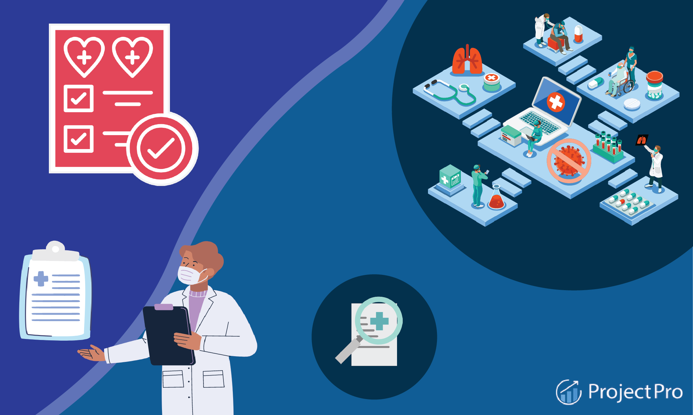

Breast Cancer Breakdown Dashboard

In response to the crucial requirement stated by Dr. Hafsa, a dedicated medical professional at Osmania Hospital, the Breast Cancer Visualization project seeks to improve interpretation of breast cancer data through complete visual dashboards. The project makes use of a dataset collected from Kaggle, and its development involves painstaking data cleaning in Microsoft Excel, including sophisticated tools such as Power Query. The ultimate objective is to give superior visual insights for breast cancer patients, allowing them to make more educated treatment decisions.
Occupation Survey Dashboard

This Occupational Survey Dashboard examines data-driven professional occupations such as data analysts, engineers, architects, and administrators. It uses Excel and Power BI to investigate gender income disparities, entrance hurdles, preferred languages, wage distributions, and work satisfaction.
Sales Data Dashboard

This Sales Analysis Dashboard is a powerful tool that provides a thorough overview of sales data by utilizing Microsoft SQL Server for rapid data cleansing and Power BI for dynamic presentation. This project focuses on essential business characteristics such as sales trends, budget comparisons, product category performance, top customers, and best-selling items.
Crypto Analysis Dashboard

I used Python and Pandas in the Anaconda environment to undertake a thorough analysis of cryptocurrency data obtained from a well-known website's API. The project includes data cleansing, research, and visualization, which provided important insights into key variables including price fluctuations and market capitalization patterns. This task involves extracting real-time and historical data, which allowed for the construction of informative charts and interactive dashboards with Matplotlib and Seaborn. This project is aimed at investors and enthusiasts, providing a brief yet thorough overview of cryptocurrency market dynamics to help in strategic decision-making.
About Me
Name: Amir Ahmed Razvi Syed
Email: baseerahmedrazvi@gmail.com
Phone No: +1 (807)-707-7348
Mailing Address: 2-211 Southern Ave, P7C2T6, Thunder Bay, CA